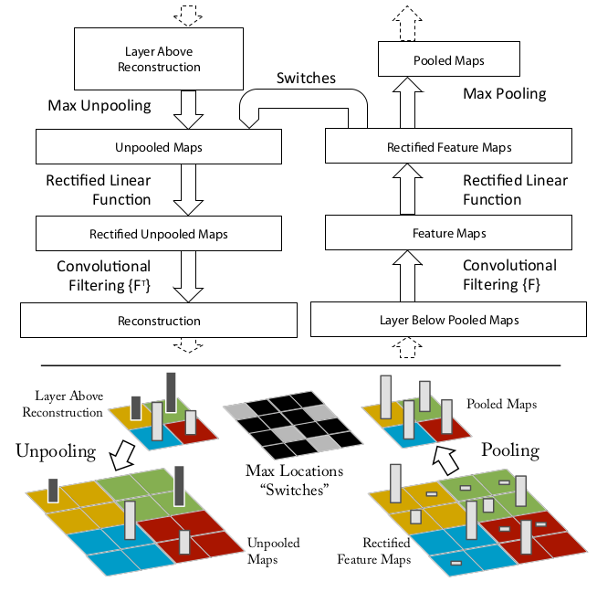
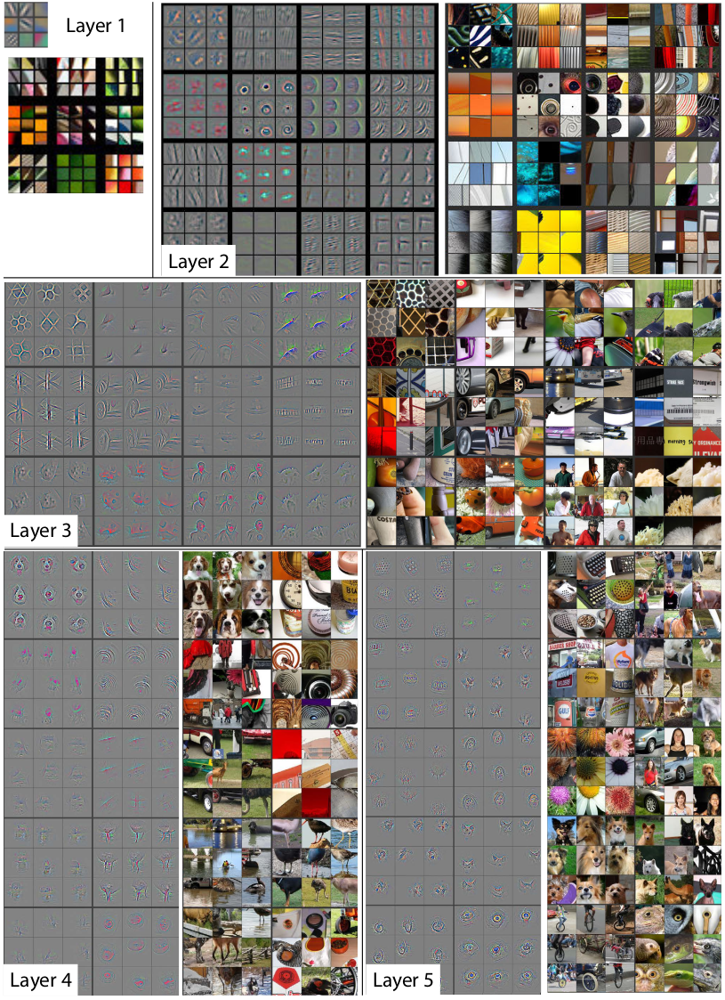
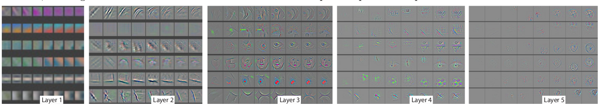
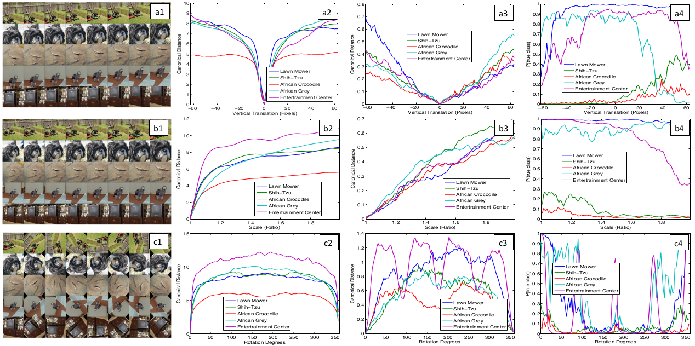
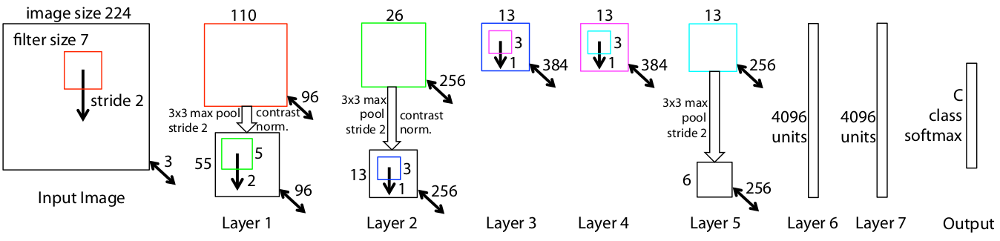
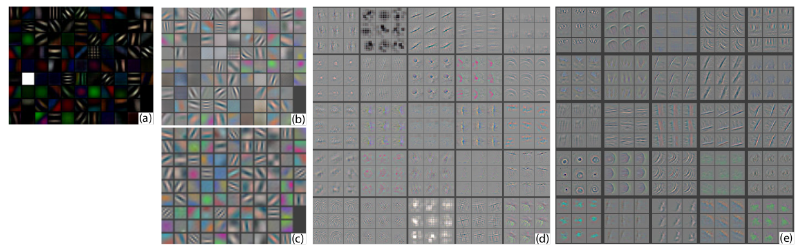
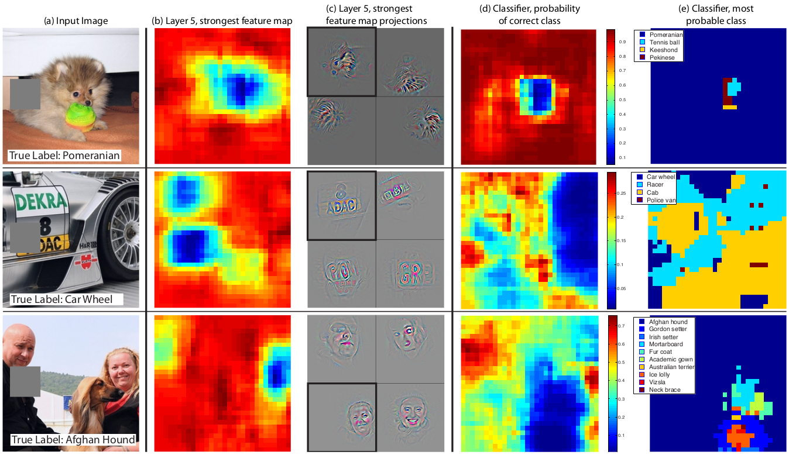
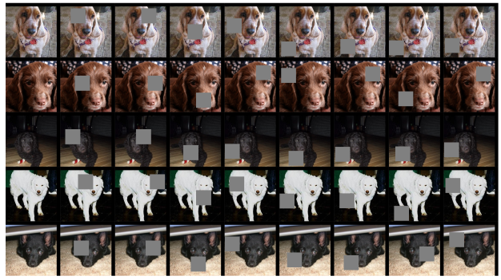
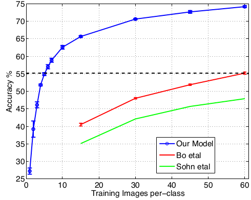

Visualizing and Understanding Convolutional Networks
目录
论文: Visualizing and Understanding Convolutional Networks
Abstract
卷积神经网络最近在 ImageNet 测试集上获得了非常好的效果.但是,却没有解释卷积神经网络工作原理和如果提升.本文,将主要讨论这两个方面.通过引入一个简单的可视化技术,来解释中间特征层的作用和分类器的操作.用于诊断后,可视化技术帮助找到了比 AlexNet 效果更好的网络结构.并且提出了部分遮挡(ablation)方法,用来发现不同网络层对模型分类效果的贡献.并且发现 ZFNet 在其他数据集上具有较较好的泛化能力:只需要重新训练 softmax 分类器,就可以在数据集上表现最好.
Introduction
自 1990's(LeCun et al.1989),卷积神经网络(convnets)在诸如手写体识别和人脸识别上都有非常好的表现.2012 年,多篇论文显示卷积神经网络在很多更为具有挑战的视觉问题上表现卓越.AlexNet 在 ImageNet 2012 分类认为有上以 convnet 模型达到了 16.4% 错误率,第二名为 26.1%.有多种原因使得卷积伸进网络又重新让人感到兴奋:(i) 更大的训练集,1M+标记样本;(ii) 基于 GPU 强大运算能力,使得训练大规模模型成了可能;(iii) 更多更好的模型正则化技巧,例如 dropout(Hinton el. al.2012)1.
尽管有这些令人兴奋的进展,这些复杂模型背后的内部计算和行为却没很好的解释,或者解释为什么这些模型可以达到这么好的效果.从一个科学的角度来看,这是不可接受的.如果对于模型是如何工作没有清晰的任何,那么后续去研究更好的模型时,就只能去试错了.本文中,介绍了一个可视化技术,用来 揭示输入数据是如何影响和激活网络层中的特征矩阵(feature map).使得可以观察特征在训练中是如何进化的,从而发现模型潜在的一些的问题.提出了基于多层逆卷积网络(multi-layer Deconvolutional Network - devconvnet)2可视化方案,用来将网络层中的特征激活矩阵映射到输入像素空间.同时通过在输入图像上执行一个局部遮挡(occluding portions),来揭示输入图像中哪些局部像素对分类器影响最大.
使用上述这些方法,以 AlexNet 作为网络结构作为骨干网络,然后探索不同的网络结构,从而实现比 AlexNet 在 ImageNet 上表现更好的网络结构.然后通过只对 softmax 分类进行训练,研究模型在其他数据集上的泛化能力.相对应无监督的预训练(unsupervised pre-training)方法3, 4, 5,这是一种有监督的预训练(pretraining).卷积神经网络的泛化能力在最近的论文中也有论述6.
Approach
本文采用标准的有监督卷积神经网络,如 LeNet 和 AlexNet 类似.这些网络模型将一个彩色的 2D 图像 \(x_{i}\) 经过一系列网络层映射到一个概率向量 \(\hat{y}_{i}\),对应 C 个不同类别.每个网络层由如下模块组成:(i) 采用可学习的卷积核对前一层的输出执行卷积操作;(ii) 卷积后的结果执行逐元素的 \(relu(x)=\max{(x,0)}\);(iii) [可选] 执行最大值采样;(iv) [可选] 特征图的局部归一化.卷积层之后为全链接层,最后一层是 softmax 分类器.figure-3显示了本文采用的网络结构.
本文使用具有 N 个类别标记的图像数据集 \({x,y}\).多分类场景下采用交叉熵损失函数(cross-entropy loss function).网络的参数(卷积层的卷积核,全链接层权重和偏置)可以通过标准的反向传播算法和随机梯度下降算法进行训练.
Visualization with a Deconvnet
为了理解卷积神经网络的操作,需要先能解释网络中间层的特征是如何激活的.本文展示了一种方法将这些激活值映射会输入像素空间,从而显示原始图像中哪些像素会引起特征图的激活,这种映射为逆卷积网络(deconvolutional network).逆卷积网络可以看作是卷积网络中操作的逆执行过程.
逆积网络和卷积网络中网络层一一对应,提供了从特征值映射到图像像素方法(如figure-1(top)).开始,图像输入到卷积网络,网络层中计算出对应的特征图.为了检查某个卷积层的激活值,现将卷积层中的其他激活值设置为 0,然后将特征图输入到对应的逆卷积网络层.然后执行(i)unpool;(ii)rectify;和(iii)重建下层的输入,从而能够激活当前的激活值.知道输入图像重建完成.
Unpooling: 卷积网络中的最大值采样操作是不可逆的,但是如果同时记住最大值采样来源的实际位置就可以实现最大值采样近似逆操作.在逆卷积网络,逆采样操作可以使用这些位置信息,将激活值放到对应位置上,从而近似保留激活值的结构.如figure-1(bottom)所示.
Rectification: 卷积神经网络采用 relu 作为非线性激活函数,只有正值可以通过.所以 relu 自己就是 relu 的逆操作.
Filtering: 卷积神经网络采用卷积核对上一层输入数据进行卷积操作.为了逆操作卷积,逆卷积网络采用相同的卷积核执行转置版本.不需要采用卷积矩阵逆矩阵,这里只是为了可视化哪些输入会最影响当前激活值.
采用记录的采样位置信息(max location switches),从高层网络层映射到低层.这些采样位置信息和输入图像有关,从单个激活值重构的像素只是原图的局部区域,对应的权值为对应像素对激活值的贡献程度.

图1 Top: 逆卷积层(左)和推应的卷积层(右).逆卷积网络会近似重构出的对应的特征图. Bottom: 逆卷积网络中的逆采样操作说明.
Training Details
现在讨论本文描述的卷积神经网络.网络结构如figure-3所示,和 AlexNet 非常相似.一个不同在于 AlexNet 将卷积层 3,4,5 分成两部分(模型被分割在两个 GPU 上),本模型采用稠密链接.layer1 和 layer2 也根据可视化结果figure-6所示进行了相应的修改,具体细节在Architecture Selection描述.
网络使用 ImageNet 2012 训练集进行训练(1.3M 图像,1000 个类别).每个 RGB 图像将最小边缩放到 256,然后从图中心切取一个 256*256 区域,然后减去逐像素均值(所有图像),在截取 10 个 224*224 的子图(四个角+中间*水平反转).采用 batch 为 128 的随机梯度优化来更新权重,开始的学习率为 \(10^{-2}\),动能系数为 0.9.当验证集错误不再下降,手动减低学习率.Dropout 在全链接层 6,7 使用,dropout 比例为 0.5.所有的权重值初始化为 \(10^-2\),偏置都设置为 0.
在训练过程中可视化第一层中的卷积核,有一些卷积核的值比较大,如图figure-6(a)所示.为了减轻这些占主导的卷积核的影响,将 RMS 值超过阈值 10-1 的卷积核进行归一化.这个方法在模型的第一层更为关键,因为输入的图像范围在[-128,128]之间.和 AlexNet 一样,对输入图像进行了一些剪切和反转,用来增强训练数据集.训练了 70 轮,在单个 GTX590 GPU 上训练了 12 天.
Convnet Visualization
用逆卷积对Training Details中描述模型的特征激活值进行可视化.
特征可视化(Feature Visualization): figure-2显示了模型训练完成后的特征可视化结果.结果可视化某个特征图中的 9 个最大的激活值进行可视化.将每个激活值分别逆卷积到像素空间,显示了激活该特征图的像素结构,不同输入在特征图中具有一定的不变性.除了可视化激活值在像素空间结果,右侧展示了对应的输入图像块.由于特征激活值描述不同的输入图像中的一些共同特性,所以这些输入图像块比特征可视化的像素结构具有更多的变化.例如:卷积层 5 行 1 列 1,对应的输入图像块之间不怎么相似,其实可视化可以发现这个特征图主要用来特征化背景中的草地,而非前景对象.
网络中的不同特征图中提取的特征具有层次性.卷积层 2 主要提取角和边/颜色的联合.卷积层 3 具有更复杂的不变性,主要提取相同的纹理(texture),例如:网状(R1,C1);文本(R2,C4).卷积层 4 提取的特征更具有变化性,也和分类目标更相关:狗脸(R1,C1);鸟腿(R4,C2).卷积层 5 显示了具有各种外形的整个分类目标:键盘(R1,C1)和狗(R4).

图2 网络模型中的特征可视化结果.卷积层 2-5 显示验证集中的某个随机选择特征图中的最大 9 个激活值,从特征空间逆卷积映射到像素空间的结果.重构结果不是模型见过的样本:而是从验证集中选取特征图中的高激活值重构结果.对于任意的特征图,右侧同时显示了对应的输入图像块.可以注意到:(i) 每个特征图中的特征具有强相关;(ii) 高卷积层具有更高的不变性;(iii) 图像中局部区域特征化,例如狗的眼睛和鼻子(卷积层 4,行 1 列 1).
训练中特征的进化(Feature Eolution during Training): figure-4显示了某个特征图中最大激活值(整个训练样本)映射到像素空间的可视化结果变化.激活值可视化图中像素突然的跳动,是因为特征图中的最大激活值的突然改变引起的.更低的卷积层只需要几轮训练就收敛了.高层卷积层需要相当多轮训练才能收敛.

图3 训练过程中随机选取的特征图中最大激活值的提取结构像素的演进.每个卷积层特征在不同的块中显示.在单独一个块中,显示了从训练[1,2,5,10,20,30,40,64]轮中随机选取的特征图的可视化结果.可视化结果显示了对应特征图中最大激活值(训练集样本)在像素空间的结构.
特征不变性(Feature Invariance): figure-5显示了 5 个简单的图像,经过移动,旋转和缩放后,模型各个卷积层计算的特征图向量和原始图像对应的特征图向量的变化.可以看到很小的变化对模型的第一层具有较大的影响,但是对高层卷积层具有较小的影响,对于平移和缩放具有近似线性的影响.网络结构对平移和缩放具有一定的稳定性.一般对旋转无法保持不变性,除了目标本身具有一定的旋转对称性(rotational symmetry).

图4 网络模型对水平移动,缩放和旋转的不变性(Rows a-c).Col 1:5 显示了不同样本.Col 2&3 分别显示了网络层 1 和 7 的变换后的特征向量和原图的特征向量的欧几里德距离.Col 4: 显示了不同变换图像的真标签的概率.
Architecture Selection
可视化结果显示了网络模型中操作的一些原理,可以帮助选择更好的网络结构.通过对 AlexNet 网络的第一,二层可视化(如figure-6 (b)&(d)),可以发现有很多问题.第一层的卷积核提取的都是高平和低频信息,中频特征较少.此外,第二层可视化结果显示由于第一层卷积核采用较大的步长 4,引起了一些混叠效应(aliasing artifacts).为了克服上述的这些问题,(i) 减少第一层的卷积核从 11*11 到 7*7,用来提取更多的中频信息; (ii) 将卷积层的步长缩减到 2.这个新的网络结构保留了更多信息,结果如figure-6 (c)&(e)所示.更为重要的,该网络结构提高的分类精度,如ImageNet 2012所示.

图5 8 层卷积网路结构.224*224 的切减子图作为输入.第一层具有 96 个 7*7 卷积核,步长为 2.输入的特征图: (i) 输入到 ReLU 激活函数;(ii) 采样(3*3 最大值采样,步长为 2);(iii) 对比归一化操作(contract normalized).输出 96 个 55*55 特征图.类似的操作在卷积层 2,3,4,5 执行.最后两层为全链接层,从最后一层卷积层获取输入(6*6*256=9216 维).最后一层为 C-路 softmax 函数,C 为分类类别的数量.所有的卷积核和特征图都是正方形的.

图6 (a): 1st 卷积层特征,没有进行缩放剪切.可以看到有一个卷积核非常大.(b): AlexNet 1st 网络层卷积核.(c): 本文的网路结构提取的 1st 卷积核.采取更小的步长(2 vs 4)和卷积核尺寸(7*7 vs 11*11),结果显示产生了更多种卷积核和更少的假死卷积核.(d): AlexNet 2nd 网络层特征可视化.(e): 本文的网络结构的 2nd 网络层特征可视化.这些特征更为干净,并具有没有(d)中显示混合谍影问题.
Occlusion Sensitivity
在图像分类方法中,一个常见的问题是判断分类模型是否真的使用了对应分类目标的信息进行分类,还是只是使用了外围信息.figure-7通过系统性遮挡图像不同区域,然后通过监控分类器输出,试图来回答这个问题.样例显示模型确实定位到了对应的对象,当遮挡住分类对象,对应类别的得分迅速减少.figure-7同时显示了最高网络层最大特征图中激活值(所有空间上激活值的和)和遮挡位置函数的可视化结果.当遮挡住主要的对象,可以看到特征图的特征值迅速下降.

图7 采用灰色方块(1st 列)系统性遮挡的三个样例,并且相应(网络层 5)的最大特征图((b)&(c))和分类结果((d)&(e))的改变.(b): 对于每一个遮挡位置,记录网络层 5 中一个特征图(在非遮挡图中具有最大激活值的特征图)的总激活值.(c): 该特征图映射到输入图像的可视化结果(黑框),和其他图像在该特征图的可视化结果.第一行显示最强的特征为狗脸.当这狗脸遮挡,该特征图激活值下降(蓝色区域在图(b)中).(d): 遮挡位置有关的正确类别的概率函数可视化结果.例如:当狗脸被遮挡,博美概率下降严重.(e): 和遮挡位置有关的最大分类类别函数可视化结果.例如: 在一行,绝大数位置都是博美分类,当狗脸被遮挡,当球没有没有被遮挡时,模型会预测网球分类.在第二个样例,汽车上的文字为网络层 5 的最大激活特征,但是分类器对车轮更关注.第三个样例,网络层 5 的最大激活特征为人脸,由于分类器采用了很多特征图,所以可以看到分类器对狗更关注(蓝色区域在图(d)中).
Correspondence Analysis
深度模型和很多识别方法的不同之处在于,深度模型没有明确的机制来建立不同图像中特定对象的相似特征提取机制(例如:人脸中眼睛和鼻子具有特定的空间关系).然而,一个令人兴奋的可能是深度模型可能内部隐式的构建了这些特征提取机制.为了探寻这种可能,随机选取了 5 张狗狗正面的图像,系统性的遮挡脸部相同的区域(例如:所有左眼睛,figure-8).对于每一张图 \(i\),计算: \(\epsilon_{i}^{l}=\mathcal{x}_{i}^{l}-\tilde{\mathcal{x}}_{i}^{l}\),\(\mathcal{x}_{i}^{l}\) 和 \(\tilde{\mathcal{x}}_{i}^{l}\) 为原始图像和遮挡图像在网络层 l 的特征向量.然后通过汉明距离(Hamming distance)来度量任意图像对的这种错误向量: \(\Delta_{l}=\sum_{i,j=1,,i \ne j}\mathcal{H}(sign(\epsilon_{i}^{l},\epsilon_{j}^{l}))\), \(\mathcal{H}\) 为汉明距离函数.更低的值表示遮挡操作具有一致的作用,因此表示在不同图像中相同目标更为一致性(遮挡左眼,对图像特征的影响保持一致).在table-1,对比了遮挡脸部三个部分(左眼,右眼和鼻子)和遮挡其他随机选择部分在网络层 \(l=5\) 和 \(l=7\).的 \(\Delta\) 分数.在网络层 5 和遮挡随机选择比,相对得分更低,显示网络模型构建了一定程度的特征一致性.

图8 一致性(correspondence)实验使用的图像. Col 1: 原图. Col 2,3,4: 分别遮挡右眼,左眼和鼻子.其他列显示了随机遮挡的例子.
| Occlusion Location | Mean Feature Sign Change Layer 5 | Mean Feature Sign Change Layer 7 |
|---|---|---|
| Right Eye | 0.067 \(\pm\) 0.007 | 0.069 \(\pm\) 0.015 |
| Left Eye | 0.069 \(\pm\) 0.007 | 0.068 \(\pm\) 0.013 |
| Nose | 0.079 \(\pm\) 0.017 | 0.069 \(\pm\) 0.011 |
| Random | 0.107 \(\pm\) 0.017 | 0.073 \(\pm\) 0.014 |
Experiments
ImageNet 2012
数据集由 1.3M/50K/100K 训练/验证/测试样本组成,属于 1000 的类别.table-2展示本文提出的模型在该数据机上的评估结果.
本文尝试复现 AlexNet 结果.最终达到的错误率和 AlexNet 报告的错误率在 0.1% 差值范围内.
接着分析了本文提出的模型(7*7 第一层卷积层和第一层,二层卷积核采用步长 2),如5所示的模型,比 AlexNet 模型好了 1.7% (test top-5).当我们集成多个模型,测试集上错误率为 14.8%,在 ImageNet 数据集上最好的发布模型(只使用 ImageNet 2012 数据集).这个错误率为非卷积神经网络的错误率的一半,该非卷积神经网络获取的错误率为 26.2%.
| Error % | Val Top-1 | Val Top-5 | Test Top-5 |
|---|---|---|---|
| (Gunji et al., 2012)7 | - | - | 26.2 |
| AlexNet, 1 convnet | 40.7 | 18.2 | -- |
| AlexNet, 5 convnets | 38.1 | 16.4 | 16.4 |
| AlexNet*, 1 convnet | 39.0 | 16.6 | -- |
| AlexNet*, 7 convnets | 36.7 | 15.4 | 15.3 |
| Our replication of AlexNet, 1 convnet | 40.5 | 18.1 | -- |
| 1 convnet as per Fig.3 | 38.4 | 16.5 | -- |
| 5 convnets as per Fig.3 - (a) | 36.7 | 15.3 | 15.3 |
| 1 convnet as per Fig.3 but with layers 3,4,5: 512,1024,512 maps - (b) | 37.5 | 16.0 | 16.1 |
| 6 convnets, (a) & (b) combined | 36.0 | 14.7 | 14.8 |
Varying ImageNet Model Sizes: 在table-3中,先对 AlexNet 网络结构调整了卷积层数,或者移除所有的卷积层.模型都是从头训练.移除全链接层(6,7),错误率只有一点升高.这很让人惊讶,因为模型的主要参数都在全链接层,但是全链接层对模型影响却不大.移除 2 个中间卷积层对错误率的影响也较小.然而同时移除中间卷积层和最后全链接层,真个模型如果只有 4 层,整个模型的表现就非常差了.也就是说网络模型的整体深度较大影响模型的表现.在table-3中,本文也修改了figure-3显示的模型.修改全链接层的大小对模型的影响非常小(AlexNet 也是).然而,通过增加中间卷积层的卷积核数量,对模型的变现提升较大.但是增加卷积核数量,同时会增大全链接层大小,从而会引起过拟合.
| Error % | Train Top-1 | Val Top-1 | Val Top-5 |
|---|---|---|---|
| Our replication of AlexNet,1 convnet | 35.1 | 40.5 | 18.1 |
| Removed layers 3,4 | 41.8 | 46.4 | 22.1 |
| Removed layer 7 | 27.4 | 40.0 | 18.4 |
| Removed layers 6,7 | 27.4 | 44.8 | 22.4 |
| Removed layer 3,4,6,7 | 71.1 | 71.3 | 50.1 |
| Adjust layers 6,7:2048 units | 40.3 | 41.7 | 18.8 |
| Adjust layers 6.7: 8192 units | 26.8 | 40.0 | 18.1 |
| Our Model (as per Fig. 3) | 33.1 | 38.4 | 16.5 |
| Adjust layers 6,7: 2048 units | 38.2 | 40.2 | 17.6 |
| Adjust layers 6,7: 8192 units | 22.0 | 38.8 | 17.0 |
| Adjust layers 3,4,6: 512,1024,512 maps | 18.8 | 37.5 | 16.0 |
| Adjust layers 6,7: 8192 units and Layers 3,4,5: 512,1024,512 maps | 10.0 | 38.3 | 16.9 |
Feature Generalization:
上述实验证明了卷积层对模型分类性能的重要性.figure-2可视化结果显示卷积层学习到的特征不变性,证明了卷积层的作用.现在探讨卷积层特征提取在其他数据集(Caltech-1018,Caltech-2569,PASCAL VOC 2012)上的泛化能力.为了证明泛化能力,保留了本文提出的在 ImageNet 训练的模型的 1-7 网络层,然后在此之上训练了 softmax 分类器(适配新数据上的类别数量),然后采用新的数据集训练模型.由于 softmax 分类器具有较少的参数,所以训练速度较快.
采用 softmax 和其他方法(线性 SVM)复杂度相似,所以实验主要用来比较本文的模型中的卷积特征提取器和其他手工特征提取器进行比较.需要特别注意的是不光本文中的卷积特征提取器和其他手工特征提取器都是在非 Caltech 和 PASCAL 训练集以外的图像上设计和训练的.例如,HOG 描述符的超参是在一个行人检测数据集10上系统实验决定的.本文同时从头在对应训练集上训练所有网络层.
一个较为复杂的情况是,Caltech 数据集中有一些图像也在 ImageNet 训练集里.采用归一化协方差方法,将这些重合的图像去除掉,然后再训练本文提出的模型,从而避免训练集和测试集出现污染.
Caltech-101: 同样采用8中的方法,在每个类别随机选择 15 或者 30 个图像用来训练和在每个类别使用 50 个图像作测试.采用 5 训练/测试折(5-folds),table-4中显示了类别中的平均准确性.训练过程花费了 17 分钟来训练 30 图像/类别.预训练模型要比在该数据集上最好的模型要好 2.2%11. 从头训练的卷积模型表现非常差,只有 46.5%.
| # Train | Acc % 15/class | Acc % 30/clsss |
|---|---|---|
| (Bo et al., 2013)11 | - | 81.4 \(\pm\) 0.33 |
| (Jianchao et al., 2009)12 | 73.2 | 84.3 |
| Non-pretrained convnet | 22.8 \(\pm\) 1.5 | 46.5 \(\pm\) 1.7 |
| ImageNet-pretrained convnet | 83.8 \(\pm\) 0.5 | 86.5 \(\pm\) 0.5 |
Caltech-256: 采用9一直的方法,每个类别选取 15,30,45 和 60 图像作为训练数据,然后在table-5中显示了模型分类准确性.基于本文提出的预训练网络获取在 60 个图像作为训练数据上最好成绩,74.5% 对 55.2%.然而,和 Caltech-101 上的实验一样,从头训练的卷积网络模型表现非常差.在figure-9显示预训练的模型只需要 6 张图作为训练数据就可以达到最好的方法,最好的方法需要 60 张图像进行训练.这显示了 ImageNet 卷积网络特征提取器的能力
| # Train | Acc % 15/class | Acc % 30/class | Acc % 45/class | Acc % 60/class |
|---|---|---|---|---|
| (Sohn et al., 2011) | 35.1 | 42.1 | 45.7 | 47.9 |
| (Bo et al., 2013 | 40.5 \(\pm\) 0.4 | 48.0 \(\pm\) 0.2 | 51.9 \(\pm\) 0.2 | 55.2 \(\pm\) 0.3 |
| non-pretrained. | 9.0 \(\pm\) 1.4 | 22.5 \(\pm\) 0.7 | 31.2 \(\pm\) 0.5 | 38.8 \(\pm\) 1.4 |
| ImageNet-pretrained. | 65.7 \(\pm\) 0.2 | 70.6 \(\pm\) 0.2 | 72.7 \(\pm\) 0.4 | 74.2 \(pm\) 0.3 |

图9 Caltech-256 分类精度对应于类别中采用的图像数量作为训练.可以看到预训练模型只需要 6 个训练样本就可以达到现在最好的模型分类11.
PASCAL 2012: 在 ImageNet 预训练的模型上采用标准的训练和验证集数据训练 20 路的 softmax 分类器.可以看到结果不是特别好,主要原因是 PASCAL 中的图像包含多种对象,但是本文提出的模型对图像只分一类.table-6显示了模型在测试集上的性能.PASCAL 和 ImageNet 数据集非常不一样,前一个数据集图像更为自然场景.这解释了本文提出的模型为什么比在 PASCAL 数据集上表现最好的模型分类精度上要低 3.2%13.然而,本文提出的模型在 5 个类别上表现的却要比13好很多.
classification)).
| Acc % | [A] | [B] | Ours | Acc % | [A] | [B] | Ours |
|---|---|---|---|---|---|---|---|
| Airplane | 92.0 | 97.3 | 96.0 | Dining tab | 63.2 | 77.8 | 67.7 |
| Bicycle | 74.2 | 84.2 | 77.1 | Dog | 68.9 | 83.0 | 87.8 |
| Bird | 73.0 | 80.8 | 88.4 | Horse | 78.2 | 87.5 | 86.0 |
| Boat | 77.5 | 85.3 | 85.5 | Motorbike | 81.0 | 90.1 | 85.1 |
| Bottle | 54.3 | 60.8 | 55.8 | Person | 91.6 | 95.0 | 90.9 |
| Bus | 85.2 | 89.9 | 85.8 | Petted pl | 55.9 | 57.8 | 52.2 |
| Car | 81.9 | 86.8 | 78.6 | Sheep | 69.4 | 79.2 | 83.6 |
| Cat | 76.4 | 89.3 | 91.2 | Sofa | 65.4 | 73.4 | 61.1 |
| Chair | 65.2 | 75.4 | 65.0 | Train | 86.7 | 94.5 | 91.8 |
| Cow | 63.2 | 77.8 | 74.4 | Tv | 77.4 | 90.7 | 76.1 |
| Mean | 74.3 | 82.2 | 79.0 | # won | 0 | 15 | 5 |
Feature Analysis
为了研究不同网络层的特征的差异,从不同网络层抽取对应特征,然后在此之上训练一个线性 SVM 或者 softmax 分类器.table-7显示了在 Caltech-101 和 Caltech-256 上的结果,可以看到随着网络层提升,模型分类精度具有稳定的提升.这也说明了越深的特征,学习到的特征也越有效.
| Cal-101 (30/class) | Cal-256 (60/class) | |
|---|---|---|
| SVM (1) | 44.8 \(\pm\) 0.7 | 24.6 \(\pm\) 0.4 |
| SVM (2) | 66.2 \(\pm\) 0.5 | 39.6 \(\pm\) 0.3 |
| SVM (3) | 72.3 \(\pm\) 0.4 | 46.0 \(\pm\) 0.3 |
| SVM (4) | 76.6 \(\pm\) 0.4 | 51.3 \(\pm\) 0.1 |
| SVM (5) | 86.2 \(\pm\) 0.8 | 65.6 \(\pm\) 0.3 |
| SVM (7) | 85.5 \(\pm\) 0.4 | 71.7 \(\pm\) 0.2 |
| Softmax (5) | 82.9 \(\pm\) 0.4 | 65.7 \(\pm\) 0.5 |
| Softmax (7) | 85.4 \(\pm\) 0.4 | 72.6 \(\pm\) 0.1 |
Discussion
本文探索了大规模卷积神经网络模型在图像分类上多个方面的表现.首先,展示了一个新的方法可视化模型中的激活值.解释了学习到的特征并不是随机,不可解释的.相反,特征具有很多直观上的属性,例如:图像语义提取,并且随着网络递增,学习到的特征具有不变性和类别区分性.同时展示了这些可视化结果如何来调试网络结构获取更好的分类效果,例如在 AlexNet 网络上提升到更好的分类结果.然后说明了经过一些列遮挡实验,分类模型对分类目标更为敏感,并不是以仅仅使用了周边场景信息.并且通过去除网络层实验,发现并不是某个网络层非常重要,而是整体网络结构的深度对分类效果影响较大.
最后,展示了在 ImageNet 上训练的模型,在其他的数据集上也有很多的泛化能力.例如: 在 Caltech-101 和 Caltech-256 数据集,由于数据集和 ImageNet 较为相似,所以本文提出的网络模型表现要比现在发表的任何方法都要好.本文提出的卷积神经网络在 PASCAL 数据集上泛化并不是特别好,可能是因为数据集具有一定的偏置.并且模型没有在该数据集上作微调,和最好的发表结果比精度差了 3.2%.例如:可以采用不同的损失函数,从而允许在一张图像上预估多个类别,从而可以使网络学习跟踪不同对象的检测,最后提升整个网络性能.
脚注:
Improving neural networks by preventing co-adaptation of feature detectors.
Adaptive deconvolutional networks for mid and high level feature learning
Greedy layer-wise training of deep networks
Extracting and composing robust features with denoising autoencoders
A fast learning algorithm for deep belief nets.
DeCAF: A deep convolutional activation feature for generic visual recognition.
Classification entry
One-shot learning of object categories
The caltech 256
Histograms of oriented gradients for pedestrian detection
Multipath sparse coding using hierarchical matching pursuit
Linear spatial pyramid matching using sparse coding for image classification
Generalized hierarchical matching for sub-category aware object classification